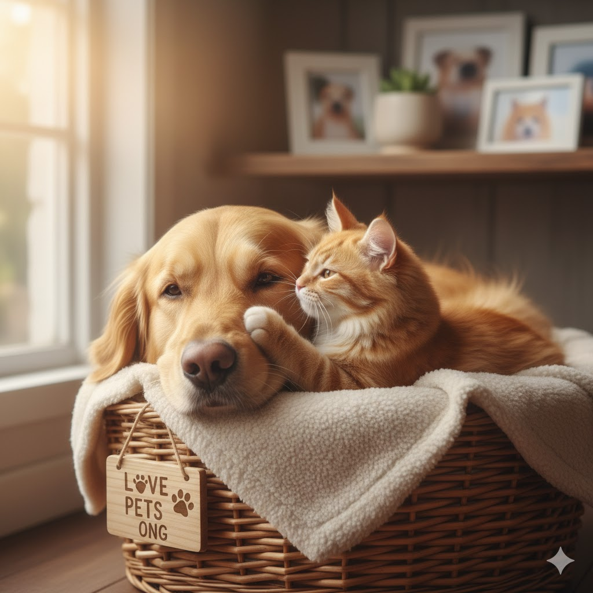

Quem somos
Na lovePETS ONG, acreditamos no poder transformador do amor e da compaixão por todos os animais. Somos uma organização sem fins lucrativos, nascida do sonho de um grupo de voluntários dedicados, unidos pela paixão em resgatar, proteger e propo rcionar uma segunda chance a cães e gatos em situação de vulnerabilidade.
lovePETS
Promover dignidade e oportunidade de acolhimento aos animais abandonados

Contato com a ONG lovePETS
Endereço: Rua das Flores, 123 - São Paulo, SP Telefone: (11) 1234-5678 Email:ONGLOVEPETS@GMAIL.COM